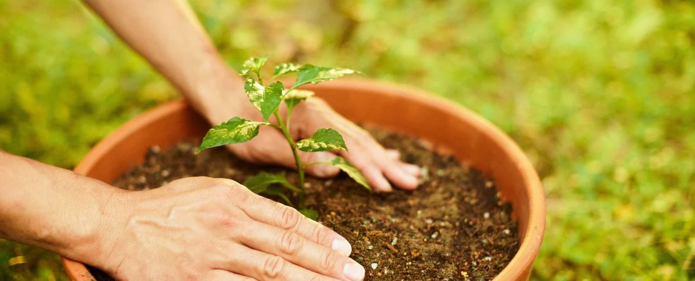
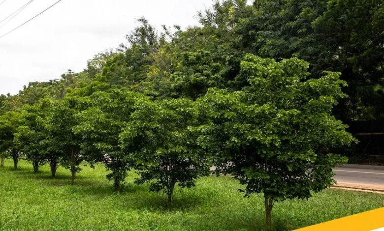

Reforestation
Tree Planting Campaign
Restoring degraded land through community-led reforestation efforts.
View projectEcoRise Foundation partners with communities to restore ecosystems, expand clean energy access, and build a healthier planet for generations to come.


EcoRise Foundation is a grassroots environmental organisation dedicated to sustainability, renewable energy, clean water access, and waste reduction. We believe lasting change starts with empowered local communities, so every programme we run is designed alongside the people it serves.
Since our founding, we've grown from a single tree-planting drive into a multi-programme foundation working across reforestation, water and sanitation, recycling, solar energy, and climate education.
A snapshot of the programmes driving real environmental and social impact.

Restoring degraded land through community-led reforestation efforts.
View project
Installing boreholes and filtration systems in underserved villages.
View project
Bringing affordable, clean electricity to off-grid communities.
View projectSince the borehole was installed, our children no longer walk three hours for water. EcoRise changed daily life for our whole village.
The solar micro-grid has let our clinic run through the night for the first time. Deliveries are safer and vaccines stay cold.
Volunteering with EcoRise's recycling programme taught our youth group real skills, and our neighbourhood is visibly cleaner.